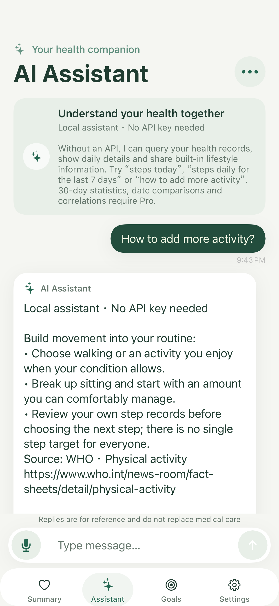

VITAGAUGE PRO
Clear features.
Clear costs.
Download for free. Choose Pro when you want a longer view and more goals.
Version 1.1 preview · This update is not released yet. The App Store shows the currently available version.
VitaGauge Pro
¥38 China launch price, one time
Your local currency and price appear in Apple’s in-app purchase sheet. Pro becomes available with the reviewed update.
| Feature | Free | One-time Pro |
|---|---|---|
| Health summary and 16 metrics | Included | Included |
| 7-day trends and basic offline queries | Included | Included |
| Built-in lifestyle information and help | Included | Included |
| Health goals | 1 | Multiple |
| 30-day trends and statistics | — | Included |
| Date comparisons and correlations | — | Included |
| Online tip selection with your own API key | — | Included; provider fees separate |
A non-consumable, one-time purchase with no automatic renewal. Restore using the original Apple Account. It does not include an API key, model credits or provider fees. Free features remain available without buying.
Explore the upcoming interface



Know what you are getting
The offline assistant uses rules, built-in information and deterministic calculations, not a general-purpose language model. It supports recent 1–30 day windows and explicit dates; longer windows, date comparisons and correlations require Pro. Missing data is never replaced with zero. Correlations do not establish causation. Online models only select built-in wellness tips; arbitrary generated diagnoses and open-ended analysis are not displayed.
Support →